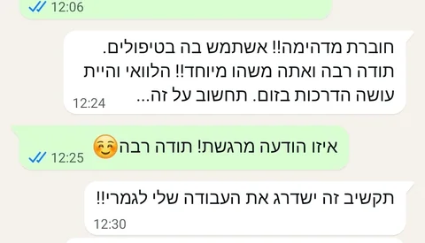
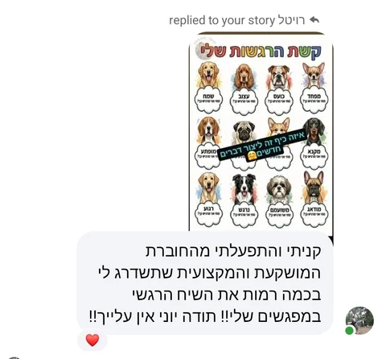
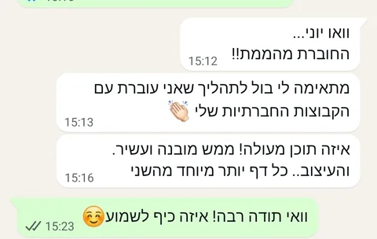

לקריאת ההמלצה המלאהחוברת מדהימה!! אשתמש בה בטיפולים. תודה רבה, אתה משהו מיוחד!הודעת WhatsApp
60 דפים של כלים לעבודה רגשית עם ילדים. בוחרים נושא, מתאימים את העבודה לילד וממשיכים את השיחה גם עם ההורים ובבית.
75 ₪
לפרטים ולהזמנה בוואטסאפכשמחפשים דרך לפתוח שיחה, להתעכב על רגש או לעבוד על קושי מסוים, טוב שיש מאיפה להתחיל. ״ארגז הכלים לשיח רגשי״ מרכז מגוון כלים לעבודה רגשית עם ילדים בחוברת דיגיטלית אחת.
אפשר לבחור את הנושא שמתאים למפגש ולילד שמולכם, ולשלב את העבודה בטיפול, בחינוך או בבית. החוברת מאפשרת גם לשתף את ההורים ולחבר בין מה שקורה במפגש לבין חיי היום־יום.
לילדים מגיל 6 ומעלה. למטפלים, לאנשי חינוך ולהורים שרוצים לעבוד עם ילדים על נושאים רגשיים. אפשר להתמקד בנושא אחד, לחזור אליו לאורך הדרך ולהמשיך את העבודה המשותפת גם בבית.
זהו קובץ דיגיטלי. החוברת מיועדת לשימוש אישי ומקצועי בלבד ומוגנת בזכויות יוצרים. לרכישה עבור צוותים, מוסדות או הזמנה מרוכזת אפשר לפנות לקבלת הצעת מחיר מותאמת.
הודעות ותגובות על ארגז הכלים לשיח רגשי, במילים של מי שכתבו אותן.

לקריאת ההמלצה המלאהחוברת מדהימה!! אשתמש בה בטיפולים. תודה רבה, אתה משהו מיוחד!הודעת WhatsApp

לקריאת ההמלצה המלאהקניתי והתפעלתי מהחוברת המושקעת והמקצועית שתשדרג לי בכמה רמות את השיח הרגשי במפגשים שלי!!הודעת Messenger

לקריאת ההמלצה המלאהמתאימה לי בול לתהליך שאני עוברת עם הקבוצות החברתיות שליהודעת WhatsApp
חוברת נהדרת! מלאה כלים ורעיונות מקסימים!תגובה בפייסבוק
לפרטים על המפגשים, המשחקים והכלים — מוזמנים ליצור קשר.